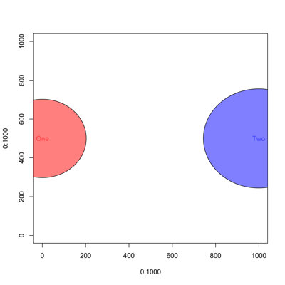
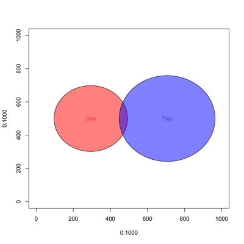
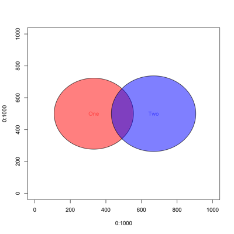
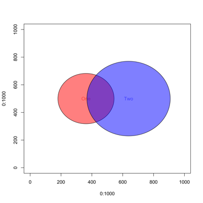
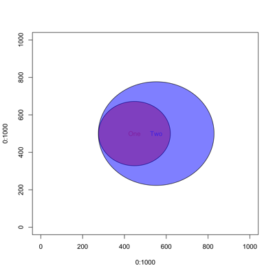

This is an early attempt at an R program to generate Venn diagrams, where the areas of the sets are proportional to the sizes of the sets. Overlapping areas should also be proportional to the numbers of overlapping members.
Existing R packages for Venn diagrams do not draw proportional areas. I have not been able to figure out how to solve algebraically even the simplest case of two circles with a given area of overlap; it is not your average SAT problem. Here I use "random shotgun" integration to estimate the areas of the circles and their overlap, in a very simple, one-dimensional optimization.
The current code only supports two sets. They are represented by circles with areas proportional to set size. These circles are initially positioned far apart, then they are moved closer together until the overlap by approximately the correct amount.
I hope to extended this idea to a third set. Circles will not work for the general case of three sets, since some combinations cannot be represented (e.g., say set 3 is the exclusive-or of sets 1 and 2), so I'll have to use one or more irregular shapes. I'll also probably settle for approximate proportionality.
[A..J] vs [K..Z]
Here the sets do not intersect . Note that the area of each circle reflects the number of elements in the corresponding set. (I should draw them closer together so they are both completely shown in the figure)
set1 <- LETTERS[1:10] # ("A", "B", "C", ...) set2 <- LETTERS[11:26] # ("K", "L", "M", ... , "Z") vennParams <- apvenn2(set1, set2, setLabels)
[A..J] vs [J..Z]
Set 1 has 10 elements, set 2 has seventeen, and they share one in common.
set1 <- LETTERS[1:10] # ("A", "B", "C", ...) set2 <- LETTERS[10:26] # ("J", "K", "L", ... , "Z") vennParams <- apvenn2(set1, set2, setLabels)
[A..O] vs [J..Z]

set1 <- LETTERS[1:15] # ("A", "B", "C", ...) set2 <- LETTERS[10:26] # ("J", "K", "L", ... , "Z") vennParams <- apvenn2(set1, set2, setLabels)
[A..J] vs [E..Z]

set1 <- LETTERS[1:10] # ("A", "B", "C", ...) set2 <- LETTERS[5:26] # ("E", "F", "G", ... , "Z") vennParams <- apvenn2(set1, set2, setLabels)
[A..J] vs [A..Z]

set1 <- LETTERS[1:10] # ("A", "B", "C", ...) set2 <- LETTERS[1:26] # ("A", "B", "C", ... , "Z") vennParams <- apvenn2(set1, set2, setLabels)